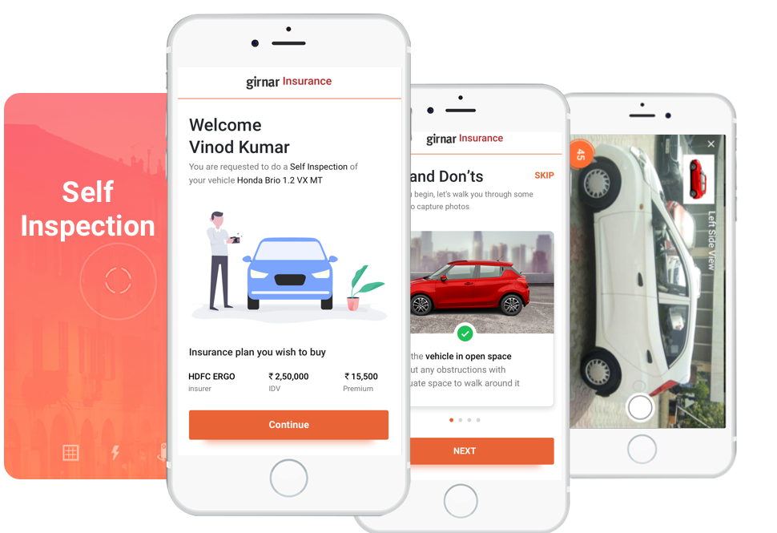
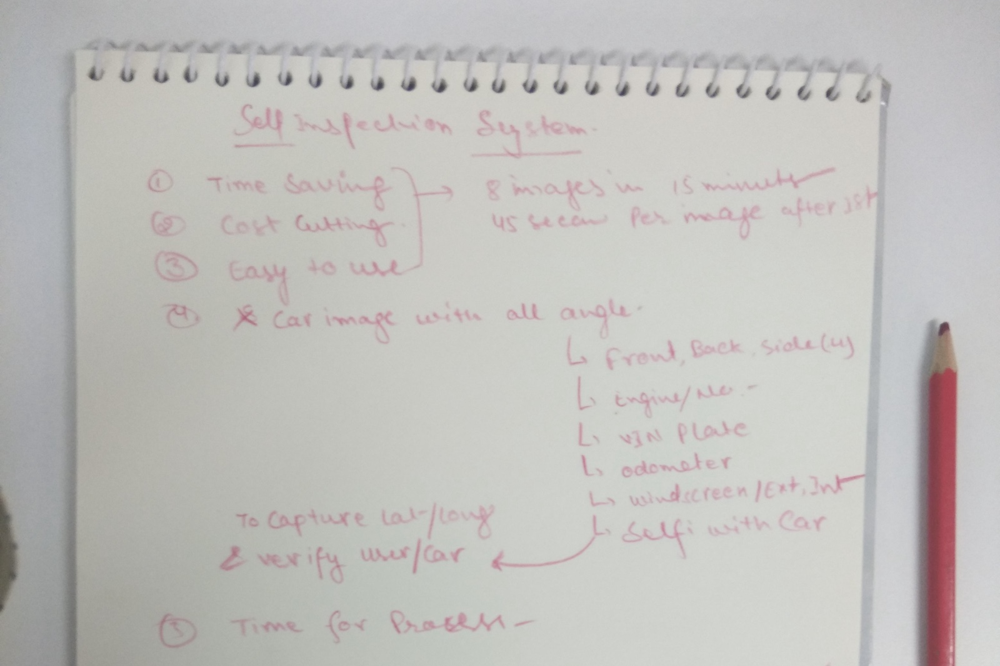
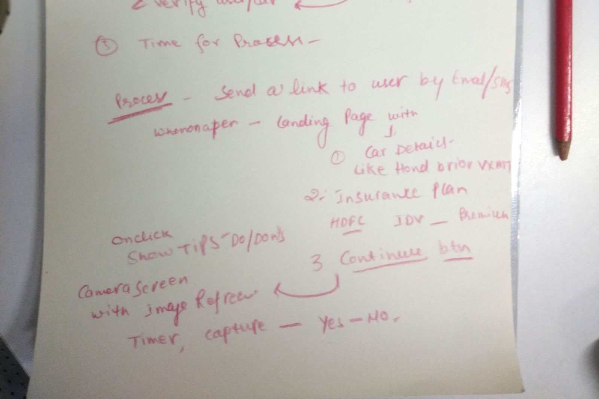
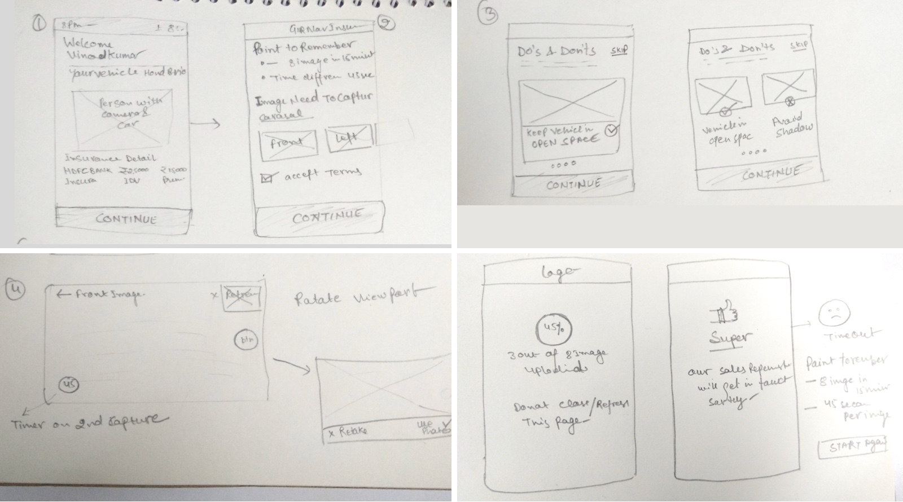
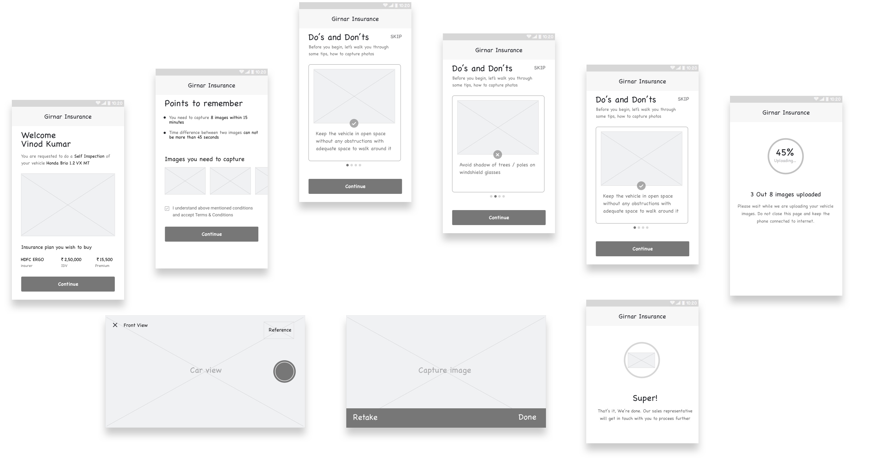
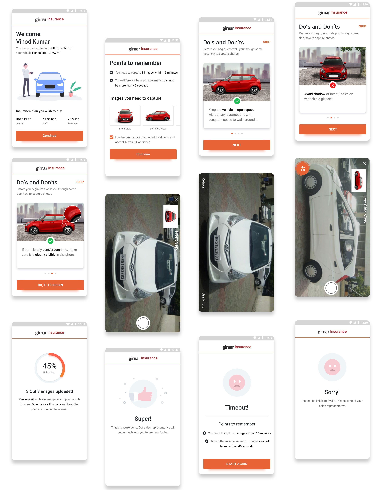

Self Inspection for Insurance
Obejective - to create a more easier, understandable, car image capture system

Challenge
At the Insurance Time, we need a person everytime who travel at the user loacation & capture the images of car and verify. also need a backend and calling system for schedule and follow up with user. It was taking a long time and costly as well as. In first research user don't know how many image need for insurance and how to capture a right image for inspection. So we are trying to make a mobile responsive system using a human-centered design process. Where user can easily capture/upload the required photo by insurance company

Process
Discover
To start of this project, our team of designer, product manager did some usability testing of the existing process with the Backend Team, Calling Team, Runner(Field members) and Customer. We found few challange like how many insurance company belive in live photo, how to user capture fake photos etc.

Insights & Strategy
One of the biggest problems customer don't know how to capture a right picture. We want only live/real photo so decide to disable option for phone gallary.

Design Strategy
Prototyping and testing
After consolidating our favorite ideas, we created a prototype and tested it with random useres, with great initial results.


Key features of the new design include:
- Using Brand colors and typography
- User Name, Car details and Insurance Details are on 1st landing page and highlighted in bold letters.
- Tips including do's and don'ts
Next steps
We’re currently in the process of working with just a step to step capture process. This is one of the most challenging parts of the process, because it depends on insurance company, Inspector and schedular. In Next step we are focusing on Machine leraning. We have information of brand model & year of car. So, we will create the right frame for right car.